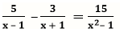
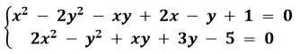
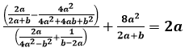
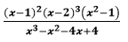
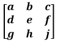
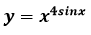
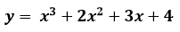
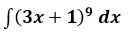
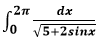
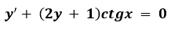

WolframAlpha
Задачи алгебры, решаемые WolframAlpha
Wolfram Alpha позволяет:
- Решать уравнения
- Решать системы уравнений
- Решать уравнения с параметром
- Вычислять свойства многочленов с несколькими переменными
- Раскладывать многочлены на многочлены меньшего порядка
- Упрощать выражения
- Выделять квадрат из выражения
- Раскладывать дроби на простейшие дроби
- Вычислять свойства матриц
- Складывать, вычитать и умножать матрицы
- Вычислять след матрицы
- Вычислять определитель матриц
- Вычислять обратную матрицу
- Вычислять собственный вектор матрицы
- Приводить матрицу к ступенчатому виду
- Приводить матрицу к диагональному виду
Задачи математического анализа, решаемые WolframAlpha
- Вычислять пределы функций
- Вычислять пределы последовательностей
- Вычислять производные
- Вычислять определенные и неопределенные интегралы
- Решать дифференциальные уравнения
- Решать системы дифференциальных уравнений
Задачи геометрии, решаемые WolframAlpha
- Решение задач планиметрии
- Решать задачи стереометрии
- Решать задачи с координатами
Особенности, различные способы решения задач с помощью WolframAlpha
Wolfram Alpha позволяет решать задачи, как аналитическим методом, так и графическим.
Алгоритмы решения задач с помощью WolframAlpha
- Определить, к какому разделу математики относится задача
- Выбрать метод решения задачи
- Составить математическую модель
- Определить необходимые для решения задачи с помощью Wolfram Alpha функции
- Ввести формулу и исходные данные
- Получить результат
- Провести анализ полученного результата
Особенности, достоинства и недостатки WolframAlpha
Главными достоинствами Wolfram Alpha являются:
- Наличие бесплатного функционала
- Возможность работы с любого устройства через браузер.
Главные недостатки Wolfram Alpha:
- Необходимость постоянного подключения к интернету для работы
- Наличие платного функционала
Задачи
Задачи из алгебры
1. Решить уравнение 
2. Решить систему уравнений:
3. Доказать тождество 
4. Упростить выражение
5. Вычислить определитель матицы:
Задачи из математического анализа
1. Найти производную функции 
2. Найти производную второго порядка функции 
3. Вычислить неопределённый интеграл
4. Вычислить определённый интеграл 
5. Найти корни дифференциального уравнения 
Задачи из геометрии
1. Найти периметр треугольника со сторонами 13, 12 и 5:
2. Найти пересечение первой прямой, проходящей через точки: (2.85,0.366) и (-0.223,3.89), и второй прямой, проходящей через точки: (0.796,0.215) и (3.256, 5.153):
3. Найти площадь четырёхугольника с координатами вершин; (1, -1), (5, 0), (6, 2), (-4, 4):
4. Определить углы и радиус вписанной окружности треугольника с вершинами (-4, 3), (5, 7) и (2, -3):
5. Найти диагонали четырёхугольника с вершинами в точках (2, -3) (5, 7) (-7, 9) (-4, 3):